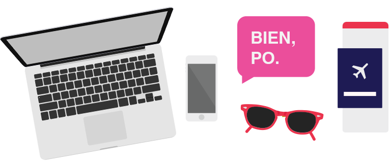

Hello, I'm Julie.
Eight years ago, I was doing user research on a playroom floor. A group of kids and I were making app “prototypes” with pipe cleaners. I took what I learned that day and helped launch one of Nickelodeon’s first mobile apps, made for kids, invented by kids.
That was the start of my colorful journey in UX. In 2012, I joined digital agency Huge. Since then, I’ve designed for Comcast and Google in the U.S., built banking apps for millionaires in Singapore, coded my own designs with developers in India, and tested with users in Japan.
I have an insatiable thirst for the unknown and that’s what brought me to Chile, from where I now work, travel, and learn to speak like a local.
